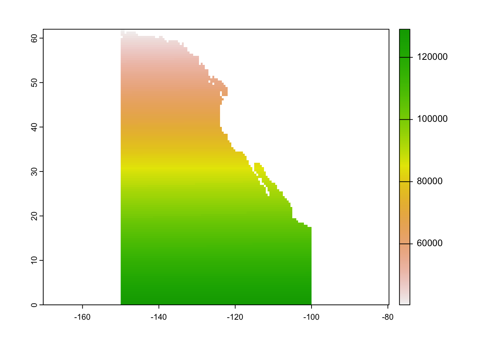
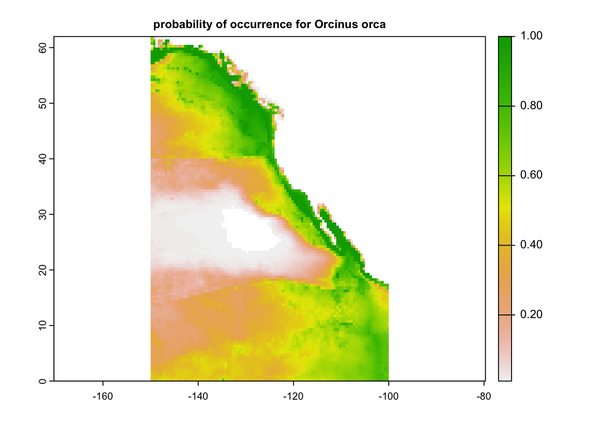
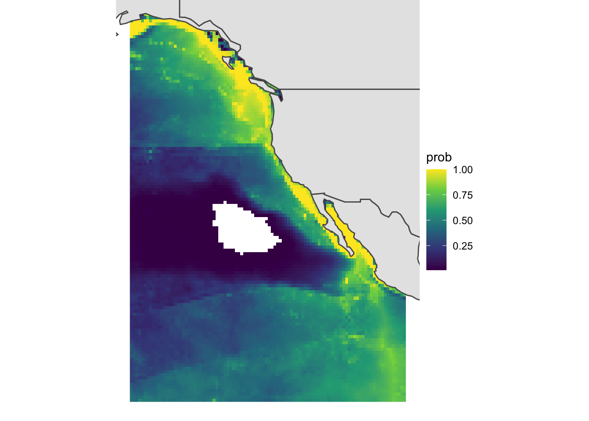
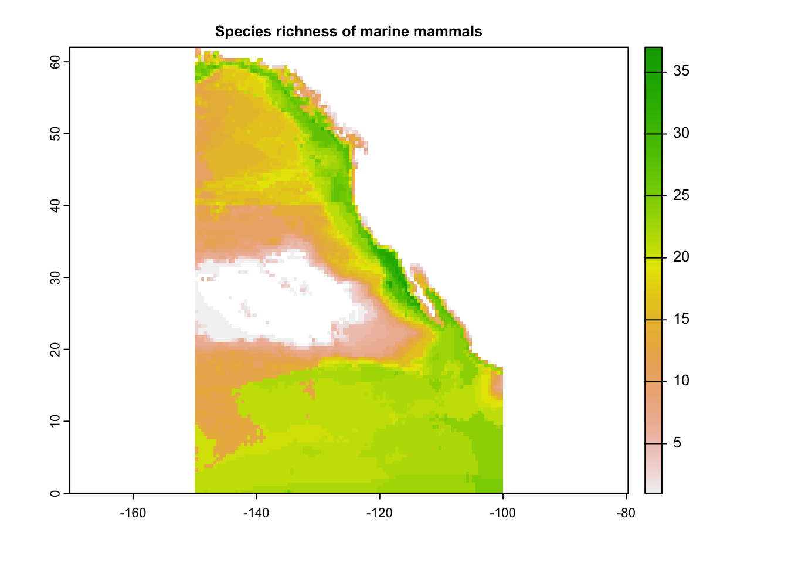
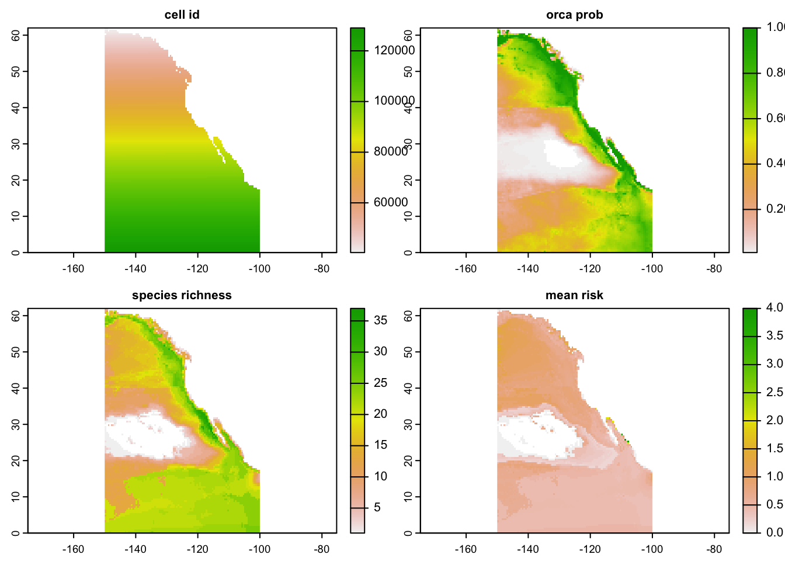
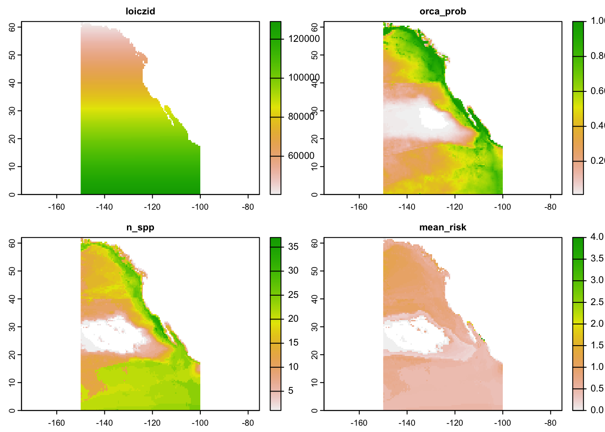

Show me the code
library(tidyverse)
library(terra) ### remotes::install_github('rspatial/terra')
library(sf)
library(jsonlite)
library(here)
library(rnaturalearth)library(tidyverse)
library(terra) ### remotes::install_github('rspatial/terra')
library(sf)
library(jsonlite)
library(here)
library(rnaturalearth)The IUCN API documentation is here: https://apiv3.iucnredlist.org/api/v3/docs
All API calls will start with most of that as a stem. We will change the endpoints to access different types of information, sometimes requiring us to include additional parameters.
For most endpoints we will also need an authorization token.
Try clicking on one of the API examples in the documentation (other than Red List version which requires no token) - e.g., “Example: All species for Azerbaijan (AZ)” - and note how the URL is filled in with different parameters and probably ends with token=XXXXX. We’ll borrow that token for our work today, but if you do real work with this API, request your own token.
Use usethis::edit_r_environ() to open .Renviron file. Type a key name, then paste in key, then save and close. Access using Sys.getenv()
iucn_token <- Sys.getenv('IUCN_KEY')Assemble a URL and pass it parameters. Inspect the JSON (JavaScript Object Notation). Read it in as a dataframe using jsonlite::fromJSON()
iucn_url <- 'https://apiv3.iucnredlist.org'
spp_page_endpoint <- paste0(iucn_url, '/api/v3/species/page/%s?token=%s')
spp_page_url <- sprintf(spp_page_endpoint, 2, iucn_token)
spp_page <- jsonlite::fromJSON(spp_page_url)
spp_page_df <- spp_page$result # or spp_page[['result']]Humpback whale is ID # 13006. Let’s find the countries where it can be found! (or try a different taxon ID from the previous step)
spp_country_endpoint <- paste0(iucn_url, '/api/v3/species/countries/id/%s?token=%s')
spp_country_url <- sprintf(spp_country_endpoint, 13006, iucn_token)
spp_ctry <- jsonlite::fromJSON(spp_country_url)
spp_ctry_df <- spp_ctry$result
DT::datatable(spp_ctry_df)Now let’s try it with the World Register of Marine Species! https://www.marinespecies.org/rest
Let’s find the ID for genus Balaenoptera, a group that includes the biggest whales in the oceans.
worms_url <- 'https://www.marinespecies.org/rest/'
worms_id_endpoint <- paste0(worms_url, 'AphiaIDByName/%s')
worms_id_url <- sprintf(worms_id_endpoint, 'balaenoptera')
worms_id <- jsonlite::fromJSON(worms_id_url)The ID for Balaenoptera is 137013, but it is stored in a variable already. Let’s find the “children”, i.e., the members of the next classification down (genus -> species)
worms_child_endpoint <- paste0(worms_url, 'AphiaChildrenByAphiaID/%s')
worms_child_url <- sprintf(worms_child_endpoint, worms_id)
worms_child <- jsonlite::fromJSON(worms_child_url)
worms_child_acc <- worms_child %>%
filter(status == 'accepted')
DT::datatable(worms_child)Not all returned data are equally easy to work with - here’s a list of lists of lists.
worms_class_endpoint <- paste0(worms_url, 'AphiaClassificationByAphiaID/%s')
worms_class_url <- sprintf(worms_class_endpoint, worms_id)
worms_class <- jsonlite::fromJSON(worms_class_url)Many coders have developed packages to work with specific APIs - the ROpenSci taxize package works well with taxonomic info from WoRMS and several other sources. There’s also a rredlist package for working with the IUCN RedList API.
This set of species includes all marine-associated mammals only. For now, note IUCN species ID, scientific and common name, and risk category, among other information. The risk category is what we want - up to date as of the end of 2021.
iucn_spp_df <- read_csv(here('data/iucn_mar_mammal_info_v2021-3.csv'))This set of species includes all marine mammals only. For now, note AquaMaps species ID, IUCN species ID, name, sciname, and risk category, among other information. Here, the risk category is not up to date - this dataset was last updated in 2020.
The critical piece here is the AquaMaps species ID, which we need to know for the spatial information in a moment. We’ll use IUCN id to join the up-to-date risk category to the AquaMaps species ID.
am_spp_df <- read_csv(here('data/am_mammal_info_v10_2019.csv')) %>%
janitor::clean_names() %>%
rename(am_sid = species_id, iucn_sid = iucn_id)Note the columns loiczid, AquaMaps species id, and probability of occurrence. LOICZID is a cell code that we’ll match to spatial information in a minute.
am_spp_cells_df <- read_csv(here('data/am_mammal_hcaf_cropped_v10_2019.csv'))This is cropped to the Eastern Pacific Ocean - east of -150 longitude, north of the equator. We will turn this into a raster for mapping our species!
am_hcaf_df <- read_csv(here('data/am_hcaf_cropped_v7.csv')) %>%
janitor::clean_names()
longlat_id_df <- am_hcaf_df %>%
filter(ocean_area > 0) %>%
select(center_long, center_lat, loiczid)
hcaf_r <- rast(longlat_id_df, type = 'xyz', crs = 'epsg:4326')
plot(hcaf_r)
We want to map IUCN risk codes against AquaMaps spatial data. Join the IUCN and AquaMaps information, to get the risk codes attached to the AquaMaps ids.
Then, using AquaMaps IDs, join the risk codes to the LOICZID information. Some mammal spp don’t occur in our selected region (e.g., South African fur seal), so end up with NA for LOICZID.
id_risk_df <- iucn_spp_df %>%
select(iucn_sid, sciname, category) %>%
mutate(cat_score = case_when(category == 'LC' ~ 0,
category == 'NT' ~ 1,
category == 'VU' ~ 2,
category == 'EN' ~ 3,
category == 'CR' ~ 4,
category == 'EX' ~ 5,
TRUE ~ NA_real_)) %>%
left_join(am_spp_df, by = 'iucn_sid') %>%
select(iucn_sid, am_sid, sciname, f_bname, category, cat_score) %>%
filter(!is.na(am_sid))
risk_cells_df <- id_risk_df %>%
left_join(am_spp_cells_df, by = 'am_sid')Let’s look at suitability of environments for killer whales, aka Orcinus orca. We’ll create a raster based on our cropped HCAF, by substituting in values of prob for values of LOICZID.
orca_df <- risk_cells_df %>%
filter(sciname == 'Orcinus orca')
orca_prob_r <- terra::subst(hcaf_r,
from = orca_df$loiczid,
to = orca_df$prob,
others = NA) ### "others" is in dev version
### if "others = NA" not supported: set unchanged cells to NA,
### based on max possible probability = 1
# orca_prob_r[orca_prob_r > 1] <- NA
plot(orca_prob_r,
main = 'probability of occurrence for Orcinus orca')
orca_prob_df <- as.data.frame(orca_prob_r, xy = TRUE) %>%
rename(prob = loiczid)
land_sf <- ne_countries(scale = 110,
continent = 'north america',
returnclass = 'sf')
ggplot() +
geom_raster(data = orca_prob_df, aes(x, y, fill = prob)) +
scale_fill_viridis_c() +
geom_sf(data = land_sf) +
coord_sf(xlim = c(-150, -100), ylim = c(0, 60)) +
theme_void()
Here we can group by cell and count up the number of spp found. Note, we may want to not count species with low probability of occurrence - let’s apply a filter for probability at least 50%.
spp_rich_df <- risk_cells_df %>%
filter(prob >= 0.5) %>%
group_by(loiczid) %>%
summarize(n_spp = n_distinct(am_sid))
spp_rich_r <- terra::subst(hcaf_r,
from = spp_rich_df$loiczid,
to = spp_rich_df$n_spp,
others = NA)
### if "others = NA" not supported: set unchanged cells to NA,
### based on known max # of species
# spp_rich_r[spp_rich_r > 117] <- NA
plot(spp_rich_r,
main = 'Species richness of marine mammals')
Here we can group by cell and find the average risk. First, let’s see how many spp in each risk category.
table(id_risk_df$category) ### note a few DD
CR DD EN EX LC NT VU
3 7 14 2 70 11 10 mean_risk_df <- risk_cells_df %>%
filter(prob >= 0.5) %>%
group_by(loiczid) %>%
### note what happens if you don't remove NAs!
# summarize(mean_risk = mean(cat_score))
summarize(mean_risk = mean(cat_score, na.rm = TRUE))
mean_risk_r <- terra::subst(hcaf_r,
from = mean_risk_df$loiczid,
to = mean_risk_df$mean_risk,
others = NA)
### if "others = NA" not supported: set unchanged cells to NA,
### based on known max value of cat_score
# mean_risk_r[mean_risk_r > 5] <- NA
plot(mean_risk_r,
main = 'Species richness of marine mammals')
use c() to combine multiple terra::SpatRaster objects into one:
all_layers <- c(hcaf_r, orca_prob_r, spp_rich_r, mean_risk_r) %>%
setNames(c('cell id', 'orca prob', 'species richness', 'mean risk'))
plot(all_layers)
If you have a dataframe of x, y, and multiple z values, put the x and y in the first two columns - and terra::rast() will put the remaining columns into separate rasters.
longlat_with_data_df <- longlat_id_df %>%
left_join(orca_df, by = 'loiczid') %>%
left_join(spp_rich_df, by = 'loiczid') %>%
left_join(mean_risk_df, by = 'loiczid') %>%
select(center_long, center_lat, loiczid,
orca_prob = prob, n_spp, mean_risk)
all_layers2 <- rast(longlat_with_data_df, type = 'xyz',
crs = 'epsg:4326')
plot(all_layers2)